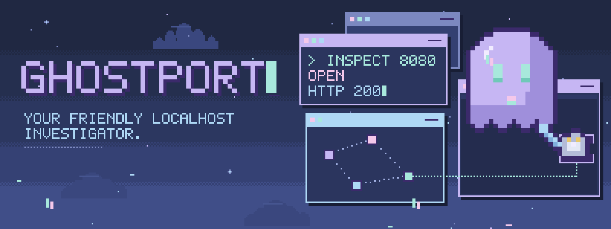
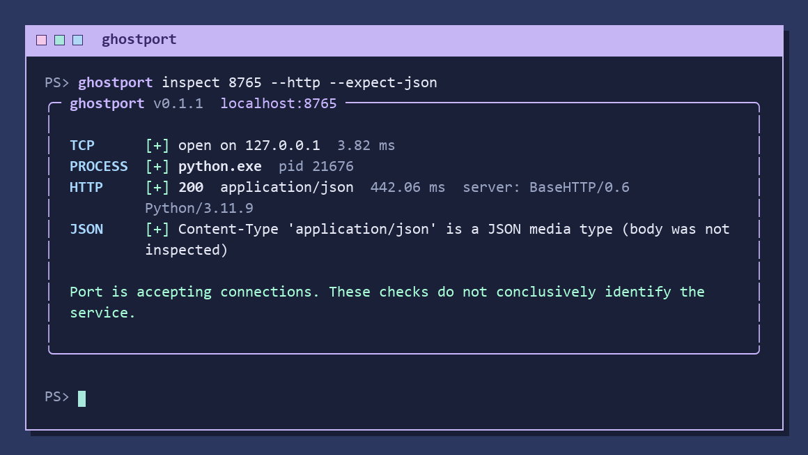
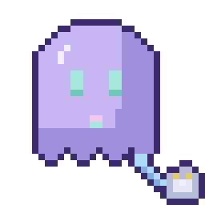
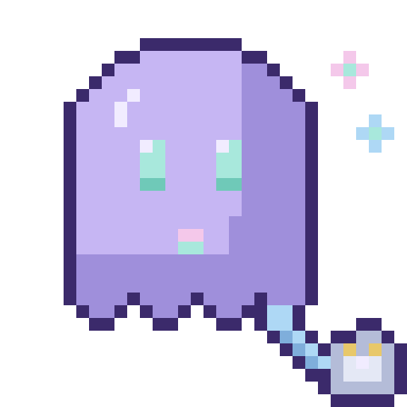
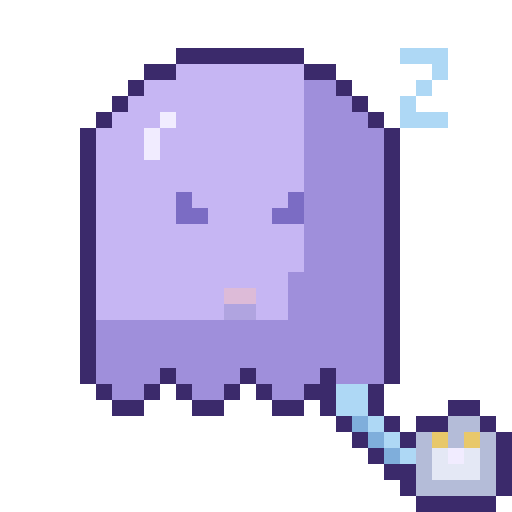
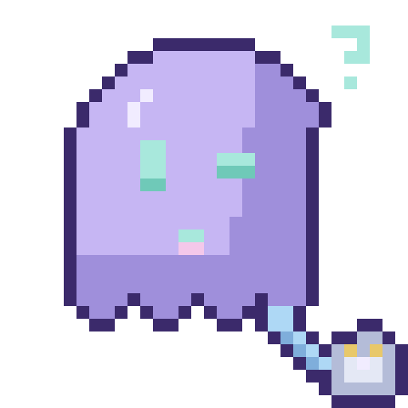

A little ghost in your localhost.

Somewhere inside your computer, a service is listening. GhostPort helps you investigate: it inspects TCP ports on your own machine, identifies the listening process when the operating system allows it, and checks how local HTTP services respond.
No dashboards, no cloud account, no background daemon. Just you, your terminal, and a little ghost with questions. GhostPort is an independent CyberStudios™ project and does not require CyberCore or any other CyberStudios software.
v0.1.1 · WINDOWS · LINUX · macOS · PYTHON 3.11+Ask your localhost a question ♡
🔎 One command, three independent checks
TCP reports whether the port accepts connections on IPv4 and IPv6 loopback. Process reports the PID and name when permissions allow, and never changes the TCP result when it can't. HTTP, when requested, sends a single bounded GET request and reports the status code, content type, server header, and response time.
ghostport inspect PORT [--http] [--expect-json] [--json] [--verbose]
[--timeout SECONDS] [--path /PATH]
| Option | What it does |
|---|---|
--http | Send one bounded HTTP GET request and inspect the response headers. |
--expect-json | Check that the content type is a supported JSON media type. Requires --http. |
--json | Stable, versioned machine-readable output for scripts. |
--verbose, -v | Extra diagnostics with sensitive values redacted. |
--timeout, -t | Per-operation timeout from 0.05 to 30 seconds. Default: 3 seconds. |
--path | HTTP request path. Default: /. |
✧ Real output
Output from ghostport inspect 8765 --http --expect-json,
run against a temporary local Python JSON test server.

A JSON content type doesn't conclusively identify a service, and GhostPort doesn't claim it does. The response body is never read or displayed.
🚦 Exit codes
| Code | Meaning |
|---|---|
0 | TCP connection succeeded and requested HTTP checks passed. |
1 | TCP connection failed, timed out, or encountered an error. |
2 | Invalid arguments or unsupported option combinations. |
3 | TCP succeeded, but the requested HTTP or JSON check failed. |
The --json report uses schema_version: 1 with independent
tcp, process, and http sections.
Additive changes keep the schema version; breaking changes require a new one.
Safety, privacy & limits
What GhostPort won't do
- Connects only to
127.0.0.1and::1. No arbitrary host scanning. - Never kills, signals, or modifies processes.
- Needs no administrator privileges.
- No telemetry and no external requests.
- Doesn't follow redirects, and ignores proxy environment variables for HTTP probes.
- Redacts sensitive headers, credentials, query values, and command-line arguments in verbose diagnostics.
Known limitations
- Process identification depends on OS permissions, and macOS may need elevated permissions.
- Closed loopback ports can take about two seconds to report on Windows.
- The three-second default timeout applies per network operation, not as a total deadline.
- TLS-only services aren't supported by the plain HTTP probe.
Meet Portgeist ♡
Portgeist is GhostPort's pixel-art mascot: a friendly little network caretaker with mint cursor eyes and an Ethernet cable tail. The poses are decorative and don't represent diagnostic results.




Install & links
📦 ghostport-cli on PyPI →
python -m pip install ghostport-cli ghostport inspect 8080 --http
The PyPI package is named ghostport-cli; the command and import name are ghostport.
Requires Python 3.11 or newer.
Source on GitHub → · v0.1.1 release → · README → · Security policy →